CS184/284A Spring 2026 Homework 3 Write-Up
Link to webpage: https://cal-cs184-student.github.io/hw-webpages-dvyns/
Link to GitHub repository: https://github.com/cal-cs184-student/hw3-pathtracer-anyname
Overview
In this homework we implemented a basic ray tracing pipeline. We started with basic ray generation and intersection test functions. Then we built a bounding volume hierarchy acceleration structure to improve rendering times. With the basic framework set-up we then implemented direct lighting and global illumnations to model lighting in various scenes. The global illumination sampling methods are slow and result in long rendering times, so we implented a form of adaptive sampling to improve performance.Part 1: Ray Generation and Scene Intersection
Ray Generation and Intersection
For each pixel, ideally we want the color to correspond to the integral of the radiance over that pixel. To estimate this, we generate a number of sample rays that intersect that pixel's area and find the nearest object (or objects, if we encode transparency) each of those rays intersect. This approach is motivated by Monte Carlo integration. At each ray intersection, we estimate how much light is reflected into the camera from that point. Summing this all up and normalizing gives us a decent estimate of the pixel color.
For this part we encode the basic logic for generating these rays and program some basic tests for intersection with primitives in the scene. Because it is expensive the check for intersection with all primitives, we will later use a bounding boxes to limit how many of these tests we are doing.
Task 1: Generating Camera Rays
In this part we note that the input \((x, y)\in [0, 1]\times[0,1]\) and we want the \(x\) and \(y\) components of the output \((x_c, y_c)\) in camera space to be in the range \[(x_c, y_c) \in \left[-\tan\left(\frac{hFov}{2}\right), \tan\left(\frac{hFov}{2}\right)\right]\times \left[-\tan\left(\frac{vFov}{2}\right), \tan\left(\frac{vFov}{2}\right)\right]\]. So construct a mappig that will take 0 to \(-\tan\left(\frac{hFov}{2}\right)\) and 1 to \(\tan\left(\frac{hFov}{2}\right)\) for the \(x\) component, and similarly for the \(y\) component linearly interpolating for points in between. We write this as:
cam_space_x = 2.0 * (x - 0.5) * tan(radians(this->hFov) / 2.0)
cam_space_y = 2.0 * (y - 0.5) * tan(radians(this->vFov) / 2.0)
We place these points in the plane at $z=-1$ as a Vector3D object.
Then we multiply this vector by the c2w transformation matrix to get the final ray direction, normalize it to unit length, and assign this direction, position, min_t, and max_t to the returned ray.
Task 2: Generating Pixel Samples
We loop through nsaa sampling from GridUniformSampler2D() at each point.
Each sample, which is between 0 and 1 in both directions, is added to the position $(x, y)$ to get the location within the corresponding pixel.
We then normalize by the buffer width in the $x$ direction and buffer height in the $y$ direction so that $x+x_{sample}$ and $y+y_{sample}$ are normalized.
This normalized sample is then passed into the generate ray function from Task 1. The resulting ray from camera->generate_ray() is passed into est_global_radiance(). We accumulate these estimated radiances and normalize
by nsaa. We then update the pixel color with this accumulation.
Task 3: Ray Triangle Intersection
For this task, we implemented the Möller-Trumbore algorithm as described in the ray-tracing slides. Instead of directly doing the scalar multiplication \[ \frac{1}{S_1\cdot E_1}\begin{bmatrix} S_2\cdot E_2 \\ S_1\cdot S \\ S_2\cdot D\end{bmatrix} \] with vectors, we calculated each point separately, since each element of the resulting vector has a separate condition necessary for intersection. Doing this saves computation when earlier checks fail.
$t = S_2\cdot E_2 / (S_1\cdot E_1)$: The time of intersection $t$ must be in between r.min_t and r.max_t.
If it isn't we return false.
$b_1 = S_1\cdot S / (S_1\cdot E_1)$: The barycentric coordinate $b_1$ must be in the range $[0, 1]$.
Otherwise the point lies outside the trieangle and we return false.
$b_2 = S_2\cdot D / (S_1\cdot E_1)$: The sum of barycentric coordinates $b_1 + b_2$ must be in the range $[0, 1]$.
Otherwise the point lies outside the triangle, and we return false.
If all of these conditions are met, than the given ray intersects the interior of the current triangle at time $t$.
In Triangle::has_intersection() we are done.
For Triangle::intersect() we still need to assign values to the intersection object:
isect->t = t;
isect->n = ((1 - b_1 - b_2) * n1 + b_1 * n2 + b_2 * n3).unit();
isect->primative = this;
isect->bsdf = this->get_bsdf();
r.max_t = t. (We forgot to do this and the banana looked all messed up.)
Task 4: Ray-Sphere Intersection
For this task, we used the method shown in lecture to test for ray intersections with sphere primitives.
The bulk of this is done in the Sphere::test() function, which is called by Sphere:has_intersection() and Sphere::intersect().
Sphere::test()returns false> if there is no intersection and true otherwise. These are found by solving the quadratic formula with the following coefficients from the ray-tracing slides:
const double a = dot(r.d, r.d);
const double b = 2 * dot(r.d, r.o - o);
const double c = dot(r.o - o, r.o - o) - this->r * this->r;
t1 and t2 where t1 is the smaller value.
We update r.max_t to the smallest intersection time between r.min_t and r.max_t if it exists.
Like in Task 3, Sphere::has_intersection() is done here.
To finish Sphere::intersect(), assign t, primitive, and bsdf to their expected values.
The normal at the intersection point on the sphere is just the difference between the intersection point on the surface of the sphere (r.o+t * r.d) and the origin of the sphere.
So we assign
isect->n = (r.o + t * r.d - this->o).unit();Some rendered .dae files:

|
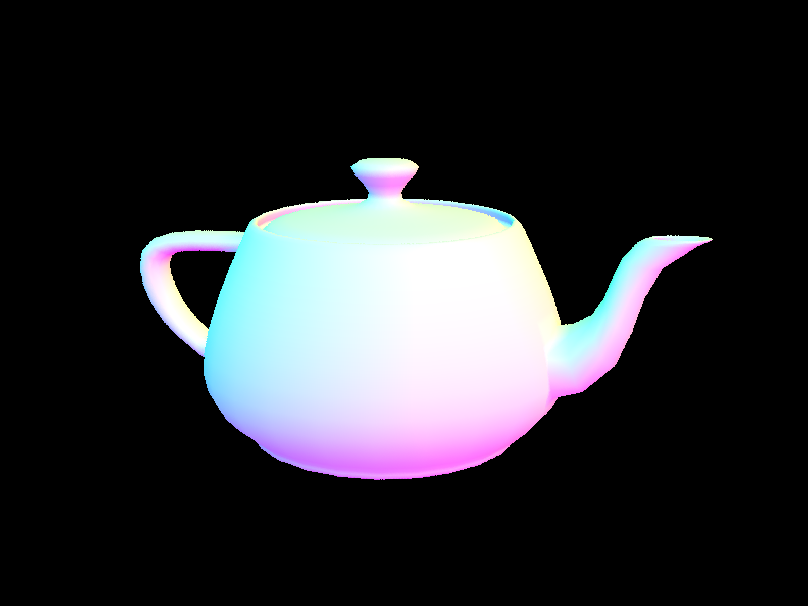 |
|
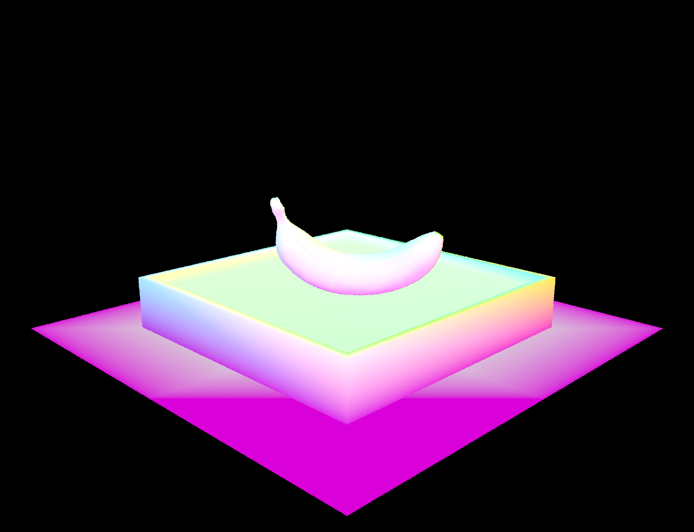 |
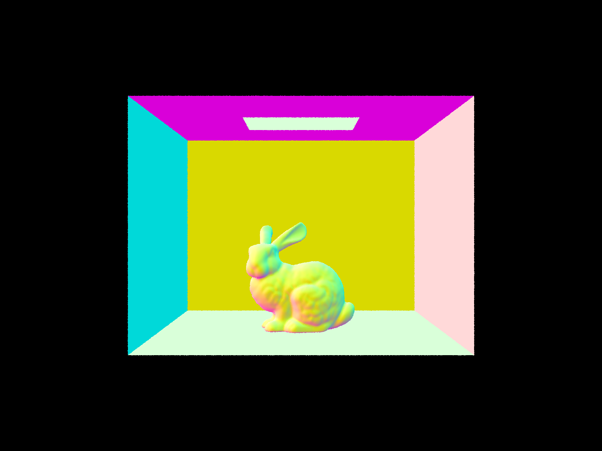 |
Oh no...

|
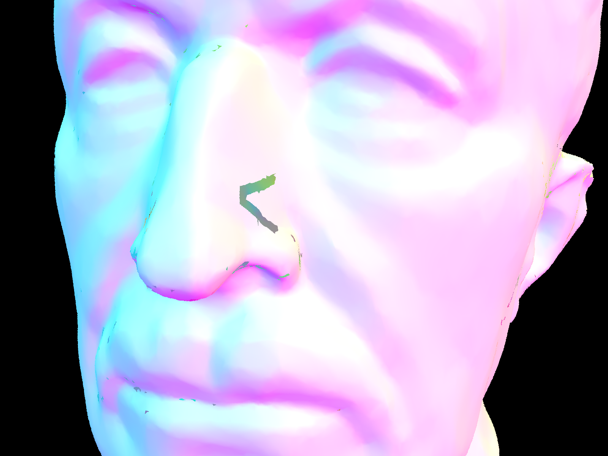 |
As can be seen in the above screenshots, some regions on the higher poly meshes have weird artifacting when rendered.
It turns out there was an error in our implementation of the Triangle:intersect() and Triangle::has_intersection()
functions that didn't rear its head until we could rear Max Planck's head.
We initially thought this was a problem with our BVH construction, but waiting for a brute force rendering of Max Planck resulted in the same problems in the same spots.
So we took to inspecting the BVH mesh around Max Planck's particularly problematic nose:

It seemed like problem regions are areas with very dense/small triangle meshes. That suggested that there could be some numerical issues with our edge testing. This would make sense since we were doing our barycentric coordinate checks after dividing by $S_1\cdot E_1$.
We then changed the logic to do the same checks, but multiplying both sides of the inequalities by $S_1\cdot E_1$ (denom).
This seemed to resolve our problem.
We also tried switching from float operations to double operations, which seemed to have no noticeable impact on artifacting.
But it also seemed to have no noticeable impact on performance, so we kept it.
Max Planck after nose job:

Part 2: Bounding Volume Hierarchy
For constructing our bounding volume hierarchy, we used an exhaustive surface area heuristic. First we check to make sure that we have more than max_leaf_size primitives in our current node. If not, this is a leaf and we return
the current node. Otherwise we move on to constructing partitions.
first_half vector, we have:
std::vector first_half(n);
first_half[0] = sorted[0]->get_bbox();
for (size_t i = 1; i < n; i++) {
first_half[i] = first_half[i - 1];
first_half[i].expand(sorted[i]->get_bbox());
} second_half vector does the same in reverse, starting from the furthest "right" primitive.
These definitions mean that the set of primitives contained in the union of first_half[split-1] and second_half[split] is mutually disjoint and contains all primitives, as desired from a split.
We keep track of the best split and best axis based on the cost function
double cost = C_trav + (first_half[split - 1].surface_area() * split +
second_half[split].surface_area() * (n - split)) /
bbox.surface_area();
C_trav = 0.125, the estimated traversal cost from lecture. To clarify, split is an iterator over the sorted vector of primitives whose position determines the split point.
All of this is done on a copy of the vector of primitives with sorting handled by std::sort(). We check that best_cost is less than number of primitives $n$, the estimated relative cost of iterating through all primitives
in the node. If it is greater than $n$ we estimate a leaf to be more efficient than any split and return the node.
Otherwise, we sort the real vector of primitives (calling std::sort() directly on start and end) along the best_axis in order of centroid position on that axis. Then we recurse on both splits
(using the convention that end is exclusive):
auto mid = start + best_split;
node->l = construct_bvh(start, mid, max_leaf_size);
node->r = construct_bvh(mid, end, max_leaf_size);The function returns the current node.
Our intersection algorithms work pretty much as would be expected. For the bounding box, we check each of the $x,y,z$ planes and use the minimum time intersection if there is one. We iterate through the BVH in the same way you would a recursive tree traversal.
The has_intersection function stops uses a logic shortcut to avoid doing unnecessary work.
BVH Scene Renders
|
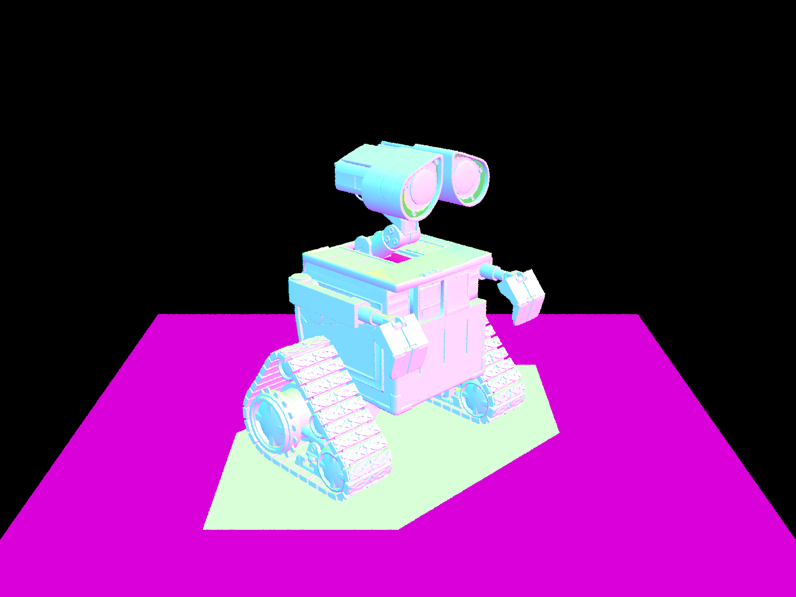 |
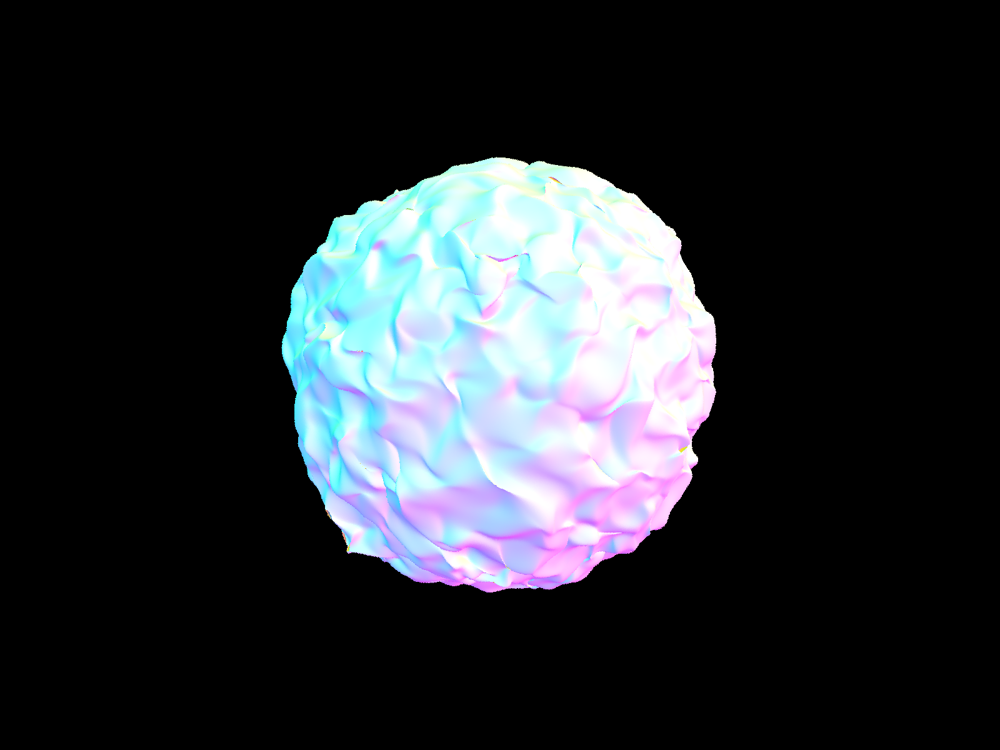 |

|
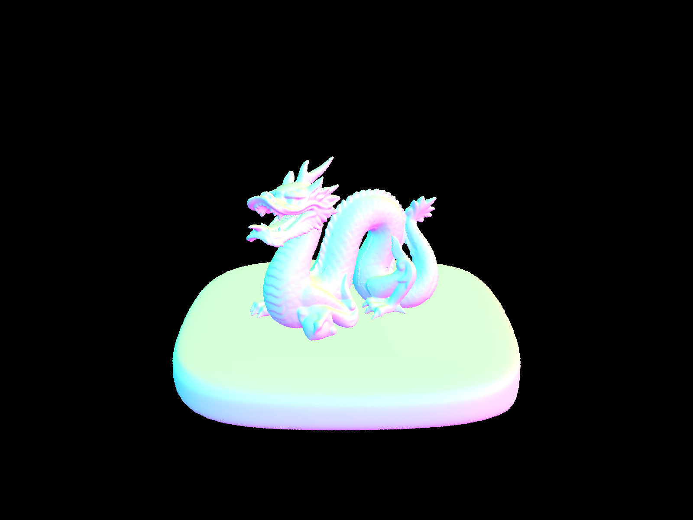 |
Naive vs. BVH Timing Comparison
| Scene | Naive | With BVH |
|---|---|---|
| Max Planck |

|

|
| Bunny |

|
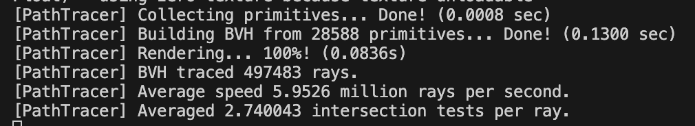 |
| Teapot |
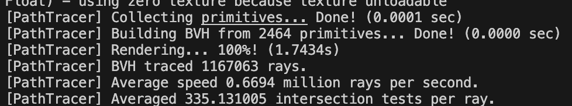 |

|
The performance gains of our BVH scale with the size/density of the meshes. Max Planck, which is the most complex scene, shows the most significant improvement. This is expected, since tree searching is roughly $O(\log n)$, where $n$ is the number of primitives whereas the naive approach is approximately $O(n)$. There are some edge cases to this, but our performance improvement should approach that asymptotic behavior as the mesh gets large enough.
The other significant point to note, however, is that the BVH construction time also scales with mesh size. The BVH construction times are not that noticeable with these meshes, but when rendering something like wall-e.dae...

and we see that the BVH construction time dwarfs our rendering time by an order of magnitude!
Assume a reasonably well balanced tree, which should be a reasonable assumption in this case. Then, for the construction time, we have the recurrence relation \[ T(n) = 2T(n/2) + O(n\log n) \implies T(n) = O(n\log^2 n). \] (This is because runtime is dominated by the $O(n\log n)$ sorting at each level).
If we instead used a bucketed approach, like in PBRT, we would only need to partition the primitives: this is an $O(n)$ operation. Hence, from the recurrence, we would get an asymptotic bound $T(n)=O(n\log n)$. This is significantly better, and suggests we would probably be better off using a bucketed approach.
We will discuss tradeoffs of these approaches alongside a further discussion on BVH heuristics in the extra credit section. (We ran out of time to do this.)
Part 3: Direct Illumination
We implemented both direct-lighting estimators in pathtracer.cpp: uniform hemisphere sampling in estimate_direct_lighting_hemisphere(...) and light importance sampling in estimate_direct_lighting_importance(...).
Implementation Walkthrough
For uniform hemisphere sampling, we build a local shading frame at the hit point, draw directions uniformly over the upper hemisphere with hemisphereSampler->get_sample(), trace a shadow ray in that direction, and only accumulate a contribution when that ray lands on an emissive surface. Since the sampling density is uniform,
\[ p(\omega_i) = \frac{1}{2\pi}, \]
so the Monte Carlo estimator in our current implementation is
\[ \widehat{L}_{\text{hemi}} = \frac{2\pi}{N} \sum_{k=1}^{N} f_r(x, \omega_o, \omega_k)\,L_e(x_k, -\omega_k)\,\max(0, \cos \theta_k)\,\mathbf{1}_{\text{visible}}. \]
Vector3D w_in = hemisphereSampler->get_sample();
Vector3D w_in_world = o2w * w_in;
Ray shadow_ray(hit_p, w_in_world);
shadow_ray.min_t = EPS_F;
if (bvh->intersect(shadow_ray, &isect_light)) {
Vector3D emm = isect_light.bsdf->get_emission();
if (emm.norm() > 0) {
L_out += isect.bsdf->f(w_out, w_in) * emm * w_in.z * (2.0 * PI);
}
}
For importance sampling, we instead sample each light source directly with light->sample_L(...), transform the sampled direction into the local frame, cast a shadow ray with max_t = dist - EPS_F, and add the contribution only if the light is unoccluded. The estimator is
\[ \widehat{L}_{\text{light}} = \sum_{j \in \text{lights}} \frac{1}{N_j} \sum_{k=1}^{N_j} \frac{f_r(x, \omega_o, \omega_{j,k})\,L_j(x, \omega_{j,k})\,\max(0, \cos \theta_{j,k})}{p_j(\omega_{j,k})}\,\mathbf{1}_{\text{visible}}. \]
Vector3D rad = light->sample_L(hit_p, &w_in_world, &dist, &pdf);
Vector3D wi_obj = w2o * w_in_world;
if (wi_obj.z < 0) continue;
Ray shadow_ray(hit_p, w_in_world);
shadow_ray.min_t = EPS_F;
shadow_ray.max_t = dist - EPS_F;
if (!bvh->intersect(shadow_ray, &shadow_isect)) {
L_out += isect.bsdf->f(w_out, wi_obj) * rad * wi_obj.z / pdf;
}Uniform Hemisphere vs. Importance Sampling
For this comparison we used CBbunny.dae with -s 64 -l 1 -m 1, once with -H and once with the default importance-sampling estimator.
|
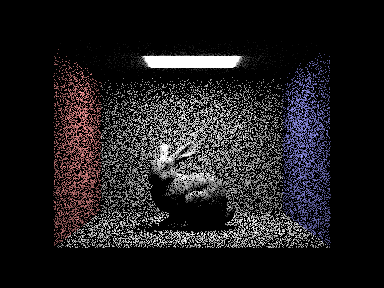 CBbunny.dae, 640x480, 64 spp, 1 light ray, m = 1 |
CBbunny.dae, 640x480, 64 spp, 1 light ray, m = 1 |
The difference is pretty clear.
Uniform hemisphere sampling is extremely inefficient compared to importance sampling here because the small area light covers only a tiny fraction of the hemisphere.
Most sampled directions contribute nothing, so the bunny, walls, and floor remain heavily speckled even at 64 samples per pixel.
The efficiency of importance sampling comes from the fact that every shadow-ray sample comes from a light source.
That makes the the overall estimate much less noisy for the same render budget.
Importance Sampling with Different Numbers of Light Rays
The soft-shadow comparison below uses CBbunny.dae with importance sampling, -s 1 -m 1, and varying -l = 1, 4, 16, 64 as requested by the Part 3 spec.
|
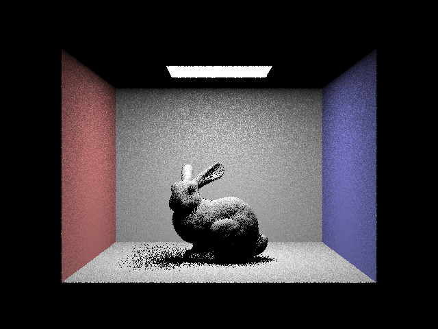 -l 1, 640x480, 1 spp, m = 1 |
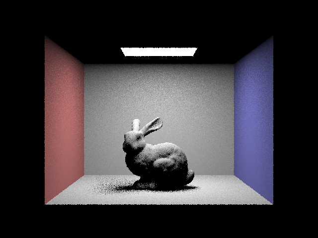 -l 4, 640x480, 1 spp, m = 1 |
|
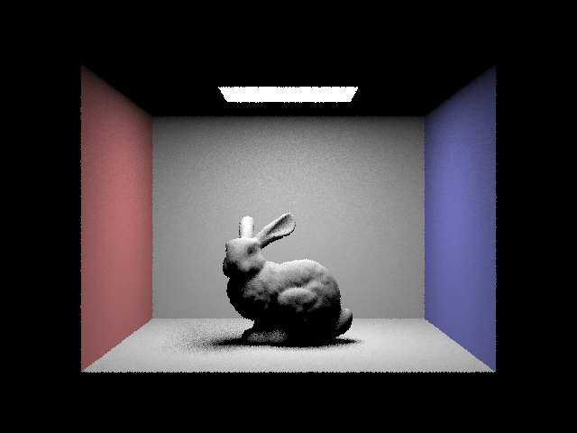 -l 16, 640x480, 1 spp, m = 1 |
-l 64, 640x480, 1 spp, m = 1 |
Increasing the number of light rays reduces variance in the soft shadow under the bunny and the nearby floor.
At -l 1, the shadow boundary is dominated by noise because each shading point sees only one sample of the area light.
At -l 4 and -l 16, that boundary becomes progressively more stable and the shadow under the bunny stops breaking apart into isolated specks.
By -l 64, the shadow is much smoother and the floor noise is substantially reduced, even though we still used only one camera sample per pixel.
This matches what we expect from the estimator.
More light samples at each hit point gives a better Monte Carlo approximation of the area-light integral. Hence, soft-shadow noise falls quickly as -l increases.
Part 4: Global Illumination
We extended our Part 3 estimator into a recursive global-illumination integrator.
Implementation Walkthrough
The starting point is the standard decomposition of outgoing radiance into emitted, direct, and indirect terms:
\[ L_o(x, \omega_o) = L_e(x, \omega_o) + L_{\text{direct}}(x, \omega_o) + L_{\text{indirect}}(x, \omega_o). \]
Our top-level integrator follows that split directly. We first intersect the camera ray against the BVH, return environment radiance when nothing is hit, add emitted radiance at the primary hit, and then add the recursive bounce estimator if the ray still has depth remaining.
Vector3D PathTracer::est_radiance_global_illumination(const Ray &r) {
Intersection isect;
Vector3D L_out;
if (!bvh->intersect(r, &isect))
return envLight ? envLight->sample_dir(r) : L_out;
L_out = zero_bounce_radiance(r, isect);
if (max_ray_depth > 0) {
L_out += at_least_one_bounce_radiance(r, isect);
}
return L_out;
}
Here, zero_bounce_radiance represents the emitted term L_e, while at_least_one_bounce_radiance is responsible for the transport beyond pure emission. This means Part 4 builds on top of Part 3 instead of replacing it.
Inside the recursive helper, the indirect term is estimated with Monte Carlo sampling over the BSDF. In integral form, the bounced contribution is
\[ L_{\text{indirect}}(x, \omega_o) = \int_{H^2} f_r(x, \omega_i, \omega_o)\,L_o(x', -\omega_i)\,|\cos \theta_i|\,d\omega_i. \]
After sampling one direction from the BSDF, our one-sample estimator becomes
\[ \widehat{L}_{\text{indirect}} = \frac{f_r(x, \omega_i, \omega_o)\,L_o(x', -\omega_i)\,|\cos \theta_i|}{p(\omega_i)\,p_{rr}}, \]
where \(p(\omega_i)\) is the BSDF sampling density and \(p_{rr} = 0.7\) is the Russian roulette survival probability. We directly implent that estimator:
Vector3D PathTracer::at_least_one_bounce_radiance(const Ray &r,
const Intersection &isect) {
Matrix3x3 o2w;
make_coord_space(o2w, isect.n);
Matrix3x3 w2o = o2w.T();
Vector3D hit_p = r.o + r.d * isect.t;
Vector3D w_out = w2o * (-r.d);
Vector3D L_out(0, 0, 0);
if (isAccumBounces || r.depth == 1) {
L_out += one_bounce_radiance(r, isect);
}
if (r.depth <= 1) return L_out;
double ppdf = 0.7;
if (!coin_flip(ppdf)) return L_out;
Vector3D w_obj;
double pdf;
Vector3D f = isect.bsdf->sample_f(w_out, &w_obj, &pdf);
if (pdf == 0) return L_out;
Vector3D w_world = o2w * w_obj;
Ray next_ray(hit_p, w_world);
next_ray.min_t = EPS_F;
next_ray.depth = r.depth - 1;
Intersection nxt_isect;
if (bvh->intersect(next_ray, &nxt_isect)) {
Vector3D incoming = at_least_one_bounce_radiance(next_ray, nxt_isect);
if (isect.bsdf->is_delta()) {
incoming += zero_bounce_radiance(next_ray, nxt_isect);
}
L_out += f * incoming * abs_cos_theta(w_obj) / (pdf * ppdf);
}
return L_out;
}
We sample the BSDF in the local shading frame, so the outgoing direction is converted with \( \omega_o^{\text{local}} = T^{-1}(-r.d) \), the sampled incoming direction is mapped back with \( \omega_i^{\text{world}} = T\,\omega_i^{\text{local}} \), and the cosine term is accumulated as abs_cos_theta(w_obj). The next_ray.min_t = EPS_F line prevents self-intersections, and the explicit bvh->intersect(next_ray, &nxt_isect) test ensures that recursion only continues when a real scene hit exists.
Russian roulette keeps the recursion unbiased. If a random variable X represents the surviving bounce contribution, then
\[ \mathbb{E}\left[\frac{\mathbf{1}_{\text{survive}}}{p_{rr}} X\right] = \mathbb{E}[X]. \]
In practice, this means long low-energy paths can terminate early, while the surviving paths are reweighted by 1 / ppdf so the estimator still converges to the correct value.
The delta-material case needs one more correction. For mirror and glass paths, the next hit may be an emissive light mesh. At that point the radiance arriving from the next vertex is
\[ L_o(x', -\omega_i) = L_e(x', -\omega_i) + L_{\text{bounce}}(x', -\omega_i). \]
Our recursive helper naturally returns the bounced term, but not the emitted term at that recursive hit, so the delta branch explicitly adds zero_bounce_radiance(next_ray, nxt_isect). That is what makes light sources show up correctly in specular reflections and refractions.
Global Illumination, 1024 Samples Per Pixel
The four images below were rendered with our current implementation at 640x480 and 1024 samples per pixel.
|
|
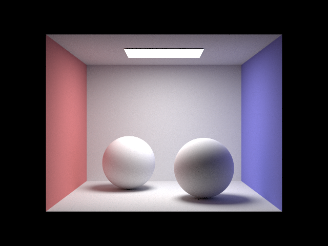 |
|
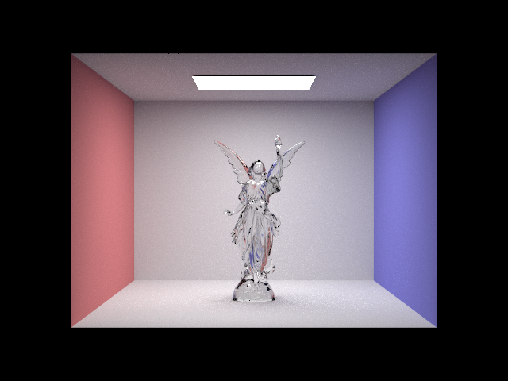 |
|
The bunny remains the clearest diffuse reference for indirect color bleeding: the red and blue walls tint the shadowed sides of the model and the floor. The microfacet dragon adds glossy multi-bounce behavior, so the gold surface picks up both direct highlights and softer reflected illumination from the Cornell box. Lucy shows the same global-illumination pipeline working through refractive transport, where reflected and transmitted light both contribute to the statue. The spheres scene gives a compact comparison case where indirect illumination is visible on the floor, the walls, and both sphere silhouettes.
Direct Illumination vs. Indirect Illumination
In our current integrator, the direct-only image is exactly the same as the m = 1 case, because a ray with depth 1 accumulates zero-bounce emission plus one-bounce direct lighting and then returns before spawning any extra bounce. For the indirect-only image, we temporarily inserted a clearly marked PART4_TEMP_RENDER_MODE switch around the primary emitted and direct terms, rendered one image, and then removed that switch immediately afterward.
|
|
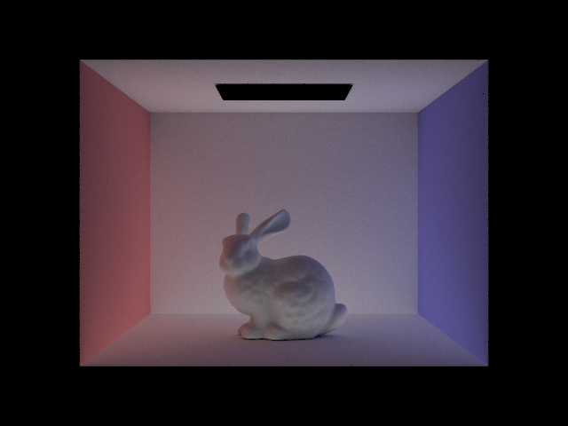 |
The direct-only image keeps the strongest contribution from the area light: the bunny is lit from above, the floor shadow is well defined. Most of the visual structure comes from direct visibility to the light source. In the indirect-only image, those directly lit regions disappear and the scene is illuminated entirely by bounce lighting. This makes the box darker overall, lifts the shadowed regions, and shows color bleeding from the walls.
Accumulated and Unaccumulated Bounces on CBbunny.dae
These renders all use 640x480, 1024 samples per pixel, and 4 light samples. With -o 0, the renderer shows only the mth bounce contribution. With -o 1, it accumulates every contribution from bounce 0 through bounce m.
Unaccumulated bounces (-o 0)
|
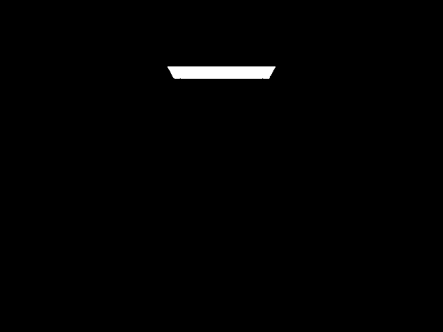 |
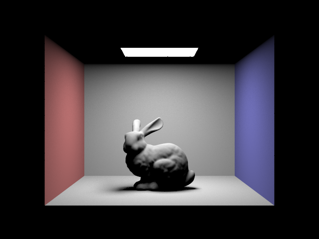 |
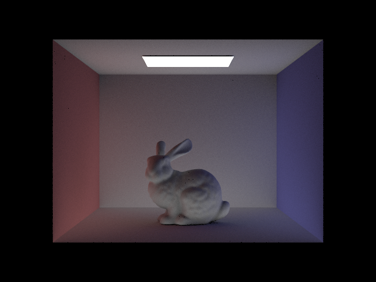 |
|
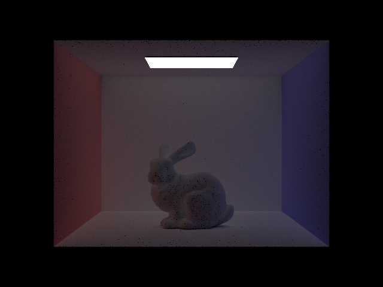 |
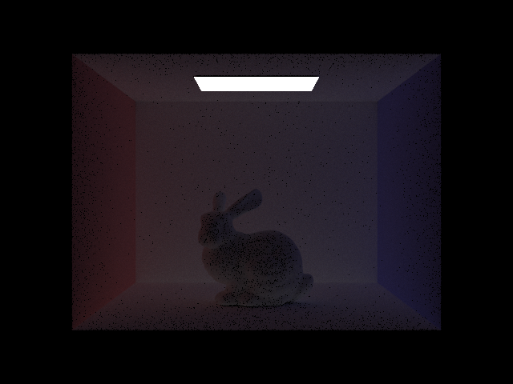 |
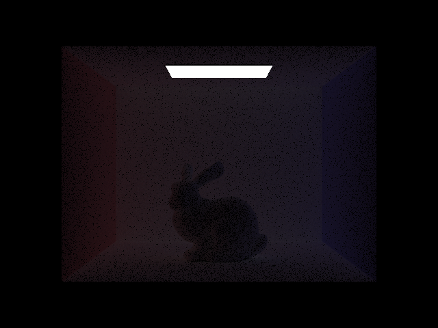 |
The m = 2 image is the first indirect bounce by itself.
We can see red and blue wall light re-enter the box and brighten the underside of the bunny.
The m = 3 image isolates the second indirect bounce.
It is weaker than m = 2, but it spreads that bounced color farther through the box and fills in the shadowed regions more evenly.
Higher isolated bounces continue the same trend, but each one contributes less energy than the last.
Accumulated vs. unaccumulated comparison
| Mode | m = 0 | m = 1 | m = 2 |
| Accumulated | 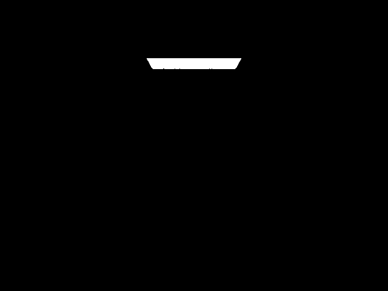 |
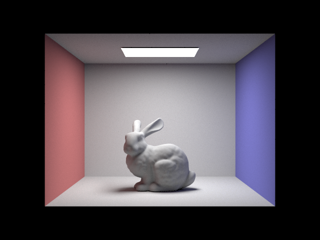 |
|
| Unaccumulated |
| Mode | m = 3 | m = 4 | m = 5 |
| Accumulated | 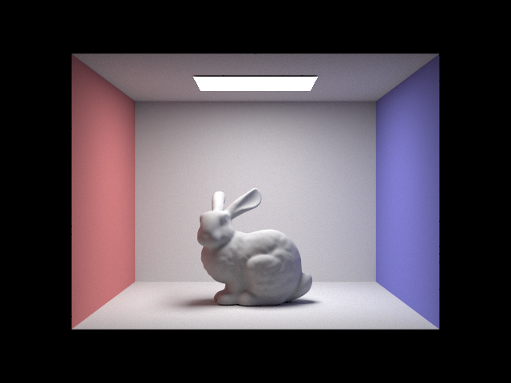 |
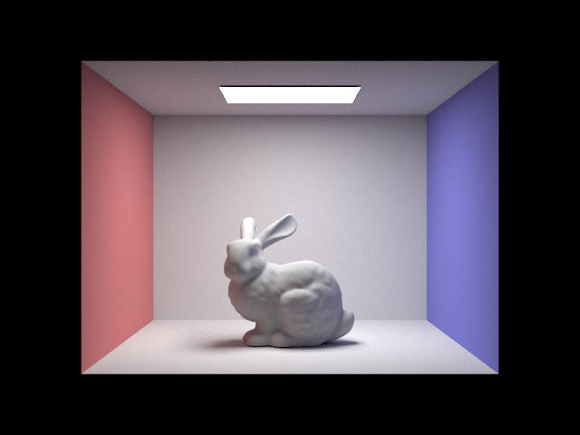 |
|
| Unaccumulated |
The accumulated sequence shows how those isolated bounce terms build the final image and the unaccumulated images show the relative contribution of each bounce.
m = 1 is the pure direct-lighting baseline, m = 2 adds the most noticeable improvement.
The first indirect bounce introduces visible color bleeding, and m = 3 through m = 5 make progressively smaller corrections.
Sample Count Comparison on CBbunny.dae
These images use 4 light rays and increasing camera-sample counts. The Monte Carlo variance decreases like
\[ \mathrm{Var}[\hat{L}_N] = \frac{\sigma^2}{N}, \qquad \sigma_{\hat{L}_N} \propto \frac{1}{\sqrt{N}}, \]
so every 4x increase in samples should reduce the visible standard deviation by about 2x.
|
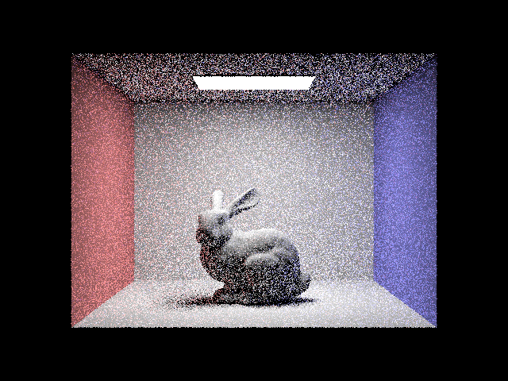 |
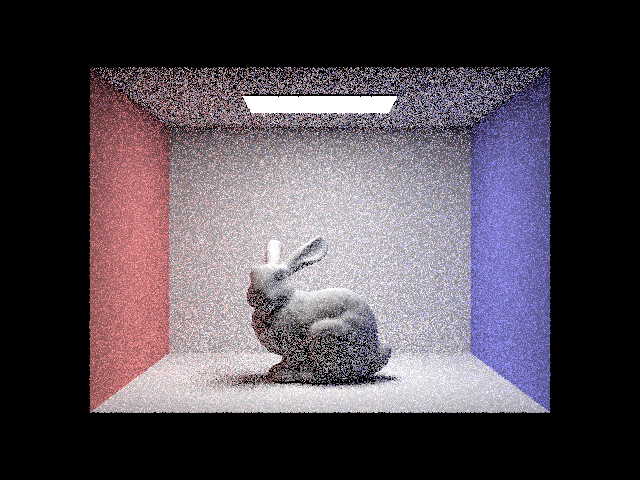 |
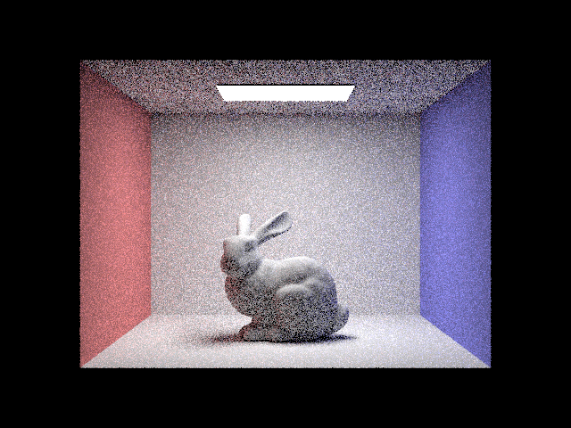 |
|
|
|
|
|
At 1 and 2 samples per pixel, the bunny and the shadowed floor are dominated by high-frequency Monte Carlo noise. At 4 and 8 samples, the overall shape is already readable, but the soft shadow boundary and the indirect wall tint are still unstable. At 16 samples, the lighting pattern starts to settle down, while 64 samples removes most of the distracting grain. By 1024 samples, the image is close to converged for this resolution and the remaining error is small compared to the low-sample cases.
Part 5: Adaptive Sampling
Adaptive sampling lets our renderer stop sampling a pixel once its Monte Carlo estimate is statistically stable instead of always spending the full sample budget everywhere. In our implementation, that means flat regions of the image can terminate early while shadow boundaries, glossy transport, and strong indirect-lighting gradients keep receiving more samples.
Convergence Test
For each pixel, we keep two running sums over the scalar luminance samples returned by rad.illum():
\[ s_1 = \sum_{k=1}^{n} x_k \qquad s_2 = \sum_{k=1}^{n} x_k^2 \]
From these, our code estimates the sample mean and sample variance as
\[ \mu = \frac{s_1}{n} \qquad \sigma^2 = \frac{1}{n - 1}\left(s_2 - \frac{s_1^2}{n}\right) \]
and then computes the half-width of a 95% confidence interval:
\[ I = 1.96 \cdot \frac{\sigma}{\sqrt{n}} \]
The pixel is declared converged when:
\[ I \leq \text{maxTolerance} \cdot \mu \]
This is exactly the stopping rule in our current raytrace_pixel(...) implementation. A large variance or a very small mean keeps the confidence interval wide, so the renderer continues sampling. Smooth diffuse regions converge quickly, while contact shadows and complex reflected light stay active much longer.
Implementation
Our implementation uses the command-line parameters -a samplesPerBatch maxTolerance. For the renders below, we used -s 2048 -a 32 0.05 -l 1 -m 5, so every pixel is tested for convergence after each batch of 32 camera samples.
double s1 = 0.0, s2 = 0.0;
int m = 0;
for (int i = 0; i < ns_aa; i++) {
Vector3D rad = est_radiance_global_illumination(ray);
double illum = rad.illum();
L_out += rad;
s1 += illum;
s2 += illum * illum;
m++;
if (m % samplesPerBatch == 0) {
double mean = s1 / m;
double var = (s2 - (s1 * s1) / m) / (m - 1);
double tol = 1.96 * sqrt(var / m);
if (tol <= maxTolerance * mean) break;
}
}
sampleBuffer.update_pixel(L_out / m, x, y);
sampleCountBuffer[x + y * sampleBuffer.w] = m;
The sample count stored in sampleCountBuffer is later normalized by ns_aa and converted into the false-color rate image. In our renderer, blue means a pixel used a small fraction of the 2048-sample budget, green means a medium sampling rate, and red means the pixel needed close to the full budget.
|
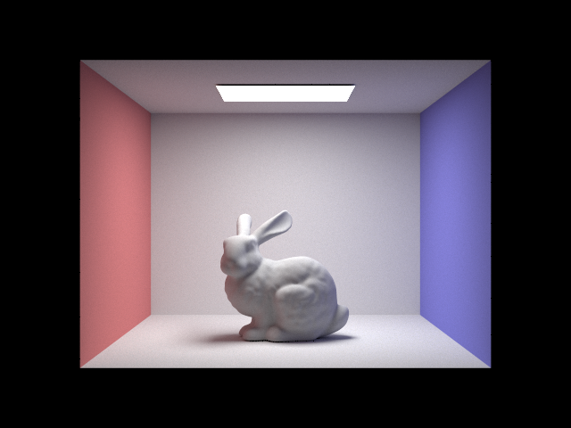 |
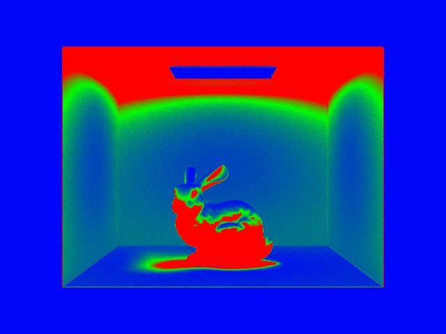 |
In the bunny scene, the two clearest red-dominant regions are the ceiling inside the box and the underside of the bunny, especially around the contact-shadow area. The directly visible light itself drops to a lower rate, and much of the surrounding walls and floor sit in green and blue instead of red. That pattern fits the current estimator: the ceiling and the lower side of the bunny carry the strongest lighting transitions in this view, while the broader wall and floor regions are smooth enough to converge somewhat earlier.
|
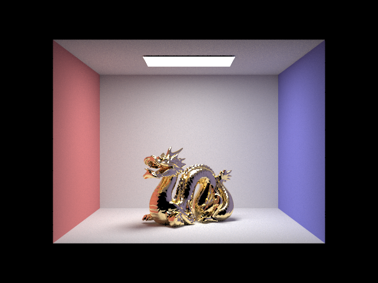 |
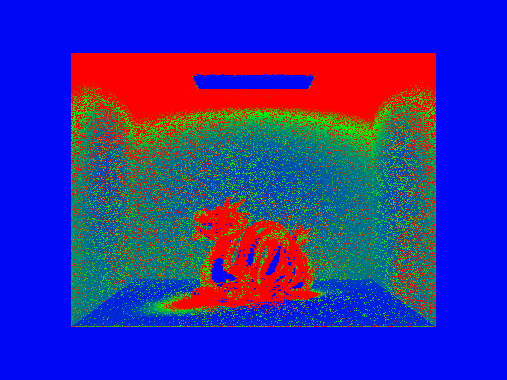 |
The dragon scene shows the same two main red-dominant regions as the bunny scene: the ceiling inside the box and the underside of the model near the contact-shadow area. The difference is that the dragon image carries substantially more noise overall, so a much larger surrounding region stays closer to the high-sample end of the scale. Briefly, that happens because the mirror dragon introduces specular transport, which produces higher-variance reflected paths than the diffuse bunny and makes the adaptive confidence test harder to satisfy early.
Part 6: Extra Credit
BVH heuristics
To test our BVH heuristic, we added two alternative split rules to compare our SAH split from Part 2: a naive centroid-midpoint split and a bucketed SAH as described in PBRT.
The renderer still calls new BVHAccel(primitives); the heuristic choice is read inside the BVH constructor from CGL_BVH_HEURISTIC.
Our benchmark command was:
CGL_BVH_HEURISTIC=<naive|bucketed|exhaustive> ./pathtracer -s 8 -l 1 -m 1 -t 1 -r 320 240 -f out.png <scene>The exhaustive SAH code path is still the same one from Part 2: on each axis we sort primitives by centroid, build prefix and suffix bounding boxes, evaluate every split point using the lecture SAH cost, and recurse only when the best split beats a leaf.
The naive builder follows the same overall recursive structure, but chooses the largest centroid-extent axis and partitions at the centroid midpoint, with a median fallback if the midpoint would produce an empty child.
The bucketed builder also follows the same recursive structure, but replaces the exhaustive split scan with 12 centroid buckets on the dominant axis and evaluates SAH only at bucket boundaries.
switch (heuristic) {
case BVHSplitHeuristic::CENTROID_MIDPOINT:
mid = midpoint_split(start, end, centroid_bbox);
break;
case BVHSplitHeuristic::SAH_BUCKETED:
mid = bucketed_sah_split(start, end, bbox, centroid_bbox);
break;
case BVHSplitHeuristic::SAH_EXHAUSTIVE:
mid = exhaustive_sah_split(start, end, bbox);
break;
}Both SAH-based builders minimize the same normalized cost:
\[ C_{\text{split}} = C_{\text{trav}} + \frac{S_L N_L + S_R N_R}{S_P}, \qquad C_{\text{leaf}} = N. \]
Here, \(S_P\) is the parent surface area, \(S_L\) and \(S_R\) are the child surface areas, and \(N_L\), \(N_R\) are the primitive counts in the two children. We recurse only when \(C_{\text{split}} < C_{\text{leaf}}\). In code, the bucketed version evaluates the same expression at only 11 bucket boundaries:
double cost = kTraversalCost +
(left_boxes[i].surface_area() * left_counts[i] +
right_boxes[i].surface_area() * right_counts[i]) /
bbox.surface_area();The asymptotic construction-time tradeoff follows from the amount of work each node performs. Our midpoint builder uses one partition pass per node, so its average recurrence is \[T_{\text{mid}}(n) = 2T(n/2) + O(n) = O(n \log n).\] The bucketed SAH also performs linear work per node because the number of buckets is fixed: \[T_{\text{bucket}}(n) = 2T(n/2) + O(Bn) = O(n \log n)\] for constant \(B = 12\). The exhaustive SAH is as before so its recurrence is \[T_{\text{exhaustive}}(n) = 2T(n/2) + O(n \log n) = O(n \log^2 n).\]
The probabilistic intuition behind bucketed SAH is still the usual surface-area argument:
\[ P(\text{ray hits child } i \mid \text{ray hits parent}) \approx \frac{S_i}{S_P}. \]
If primitive centroids are not arranged adversarially, nearby split planes tend to have similar child counts and similar child surface areas. Sampling that cost curve only at bucket boundaries, assuming we have enough bucket boundaries, usually lands close to the actual minimum. Hence the bucketed approach performs similarly on average despite evaluating far fewer candidates.
| Scene | Naive | Bucketed SAH | Exhaustive SAH |
|---|---|---|---|
| Teapot | Build: 0.0007 s Render: 0.5818 s |
Build: 0.0011 s Render: 0.4782 s |
Build: 0.0116 s Render: 0.4214 s |
| Bunny | Build: 0.0175 s Render: 0.9148 s |
Build: 0.0631 s Render: 0.8148 s |
Build: 0.4367 s Render: 0.8189 s |
| Max Planck | Build: 0.0239 s Render: 1.0261 s |
Build: 0.0566 s Render: 1.2505 s |
Build: 0.9076 s Render: 1.0078 s |
| Wall-E | Build: 0.1459 s Render: 1.8618 s |
Build: 0.2651 s Render: 1.5289 s |
Build: 5.1327 s Render: 1.5285 s |
The measurements show the expected tradeoff.
Exhaustive SAH gives the best or near-best render time with the cost of a substantially increased construction time.
On bunny.dae, for example, bucketed SAH renders slightly faster than exhaustive SAH at this sample count while building about 6.9x faster.
On wall-e.dae, bucketed SAH and exhaustive SAH render in almost identical times, but bucketed SAH builds in 0.2651 s instead of 5.1327 s, over 20x faster.
The one scene where exhaustive SAH still substantially outperforms bucketed SAH is maxplanck.dae. BUT, it cuts render time from 1.2505 s to 1.0078 s compared to bucketed SAH, but the construction cost rises from 0.0566 s to 0.9076 s.
The bucketed SAH is still faster overall.
Technically the naive approach got luckly here and ended up with the best overall runtime, but the key word here is lucky.
The midpoint split was slower than bucketed SAH in the other three tests, and on average, that is what we should expect.
More BSDF
We also completed the specular and microfacet methods in advanced_bsdf.cpp.
The two simplest cases are the perfect-mirror and perfect-refraction materials.
For mirror reflection, we reflect the outgoing direction across the local surface normal and return the delta-distribution throughput scaled by \(1 / |\cos\theta_i|\).
This matches the ideal specular BRDF form discussed in PBRT's treatment of specular reflection and transmission.
PBRT, Specular Reflection and Transmission.
reflect(wo, wi);
*pdf = 1.0;
return reflectance / abs_cos_theta(*wi);For refraction, we apply Snell's law to compute the transmitted direction. If total internal reflection occurs, we return zero transmission. Otherwise the returned throughput is scaled by the transmittance and the change-of-measure term:
\[ \eta_i \sin \theta_i = \eta_t \sin \theta_t, \qquad f_t \propto \frac{T}{|\cos \theta_t| \, \eta^2}. \]
Our glass BSDF combines reflection and transmission using the Fresnel reflectance \(F_r\). We compute the dielectric Fresnel term from the parallel and perpendicular polarization components,
\[ F_r = \frac{1}{2}\left(r_s^2 + r_p^2\right), \]
then use that as the Bernoulli probability for whether the sampled path reflects or refracts. This is exactly the standard specular dielectric split described in PBRT's Specular Reflection and Transmission chapter.
if (coin_flip(fr)) {
reflect(wo, wi);
*pdf = fr;
return reflectance * fr / abs_cos_theta(*wi);
}
*wi = Vector3D(-eta * wo.x, -eta * wo.y,
wo.z > 0.0 ? -cos_theta_t : cos_theta_t);
*pdf = 1.0 - fr;
return transmittance * (1.0 - fr) /
(abs_cos_theta(*wi) * eta * eta);The microfacet material is the most involved of the completed BSDFs. We used a Beckmann normal distribution, Smith masking-shadowing, and conductor Fresnel evaluated at the half-vector angle, which together give the Torrance-Sparrow form
\[ f_r(\omega_o, \omega_i) = \frac{F(\omega_i) \, G(\omega_o, \omega_i) \, D(h)}{4 \cos \theta_o \cos \theta_i}, \qquad h = \frac{\omega_o + \omega_i}{\|\omega_o + \omega_i\|}. \]
The Beckmann distribution term we implemented is
\[ D(h) = \frac{\exp\left(-\tan^2\theta_h / \alpha^2\right)}{\pi \alpha^2 \cos^4\theta_h}, \]
and our geometric attenuation uses PBRT's Smith approximation
\[ G(\omega_o, \omega_i) = \frac{1}{1 + \Lambda(\omega_o) + \Lambda(\omega_i)}. \]
We followed PBRT's microfacet chapter. PBRT, Microfacet Models.
const Vector3D h = (wo + wi).unit();
const double wiDotH = dot(wi, h);
return F(wiDotH) * (G(wo, wi) * D(h) / (4.0 * wo.z * wi.z));
For sampling, we sample a Beckmann-distributed half-vector, reflect \(\omega_o\) about that half-vector, and convert the half-vector density into a direction-space density using the Jacobian factor 1 / (4 (wo · h)). In code, that becomes
*pdf = D_h * h.z / (4.0 * woDotH);
*wi = 2.0 * woDotH * h - wo;The six renders below showcase our completed specular and microfacet BSDFs:
CBdragon.dae mirror |
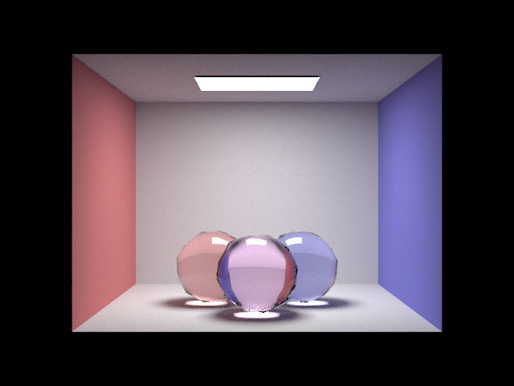 CBgems.dae glass |
CBlucy.dae glass |
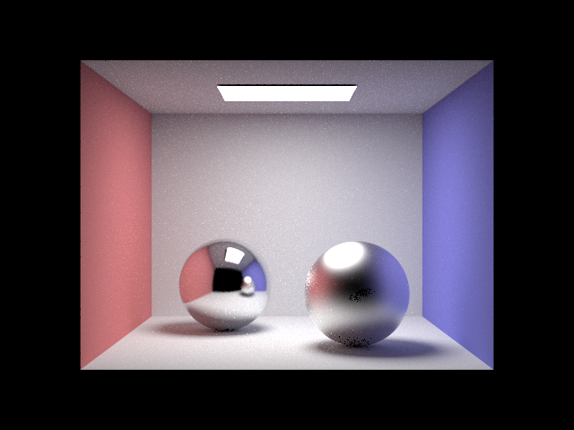 CBspheres_microfacet_al_ag.dae microfacet |
|
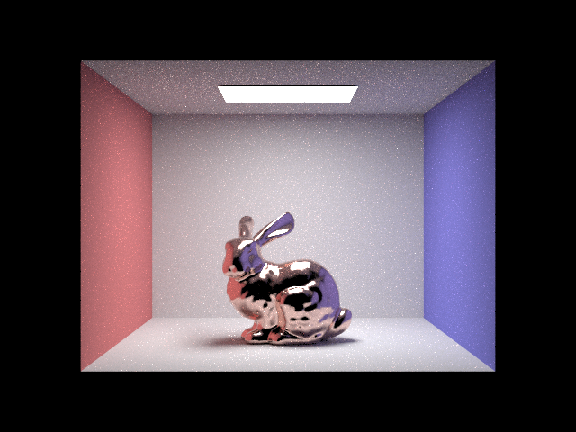 CBbunny_microfacet_cu.dae microfacet |
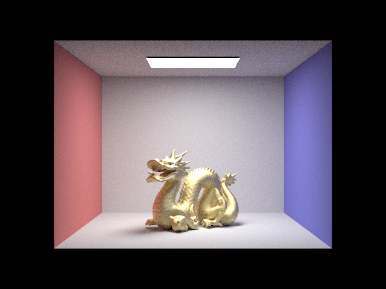 CBdragon_microfacet_au.dae microfacet |
A.I. Acknowledgment
We used A.I. tools (primarily Codex) as a debugging and writing aid during this assignment. In particular, we used them to help inspect renderer behavior, catch implementation mistakes, suggest follow-up tests, and refine parts of the writeup. We still implemented, tested, and verified the final code and report ourselves.